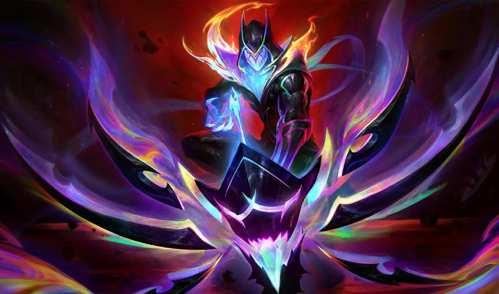

| Campeón | LA FLECHA DEL CASTIGO |
|---|---|
| VARUS |  |
Varus, de la antigua raza de los darkin, era un asesino mortal que disfrutaba atormentando a sus enemigos y llevándolos al borde de la locura antes de dispararles la flecha asesina. Fue encarcelado al final de la Gran Guerra Darkin, pero escapó siglos después en la carne reconstruida de dos cazadores jonios que lo liberaron involuntariamente y que ahora están condenados a portar el arco que contiene su esencia atada. Ahora, Varus busca a aquellos que lo encerraron para ejecutar su brutal venganza, pero las almas atadas a él le hacen frente a cada paso que da.